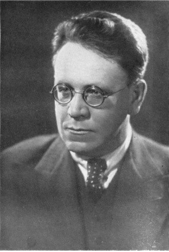

Самуил Яковлевич Маршак (1887–1964 гг.) – знаменитый советский поэт, переводчик, драматург. Известен как автор сказок для детей, сатирических произведений, а также «взрослой», серьезной лирики. Кроме этого, писатель занимался переводами английской и шотландской литературы.
Ранние годы
Родился Самуил Маршак 22 октября (3 ноября) 1887 года в Воронеже в еврейской семье. Фамилия рода «Маршак» происходит от известного раввина Аарона Кайдановера и в кратком переводе означает «наш учитель». Первое образование Маршаком было получено в гимназии под Воронежем. Учитель словесности выделял его талант среди других детей в классе, считал самым одаренным. Еще в школьные годы были написаны первые стихи Маршака. Известный критик Владимир Стасов, прочтя одну из поэтических тетрадей Самуила, помог ему поступить в гимназию Петербурга.
Начало творческого пути
После знакомства в 1904 году с Максимом Горьким, Маршак с 1904 по 1906 год прожил в Ялте у Горького на даче. В 1907 году были опубликованы первые в биографии Маршака произведения (сборник на еврейскую тематику «Сиониды»).
В 1911 году писатель совершает путешествие на Ближний Восток в качестве корреспондента газеты. Он посещает Грецию, Турцию, Палестину и Сирию. Под впечатлением от поездки Маршак пишет одно из самых удачных своих стихотворений того периода. В путешествии он знакомится со своей будущей женой Софьей.
Литературная карьера
После свадьбы в 1912 году пара уезжает в Англию. Следующей ступенькой в образовании стало обучение в университете Лондона. Проживая в Англии, Маршак начал переводить на русский язык сонеты В. Шекспира, стихотворения У. Блейка, Р. Киплинга, Дж. Остин, баллады и песни Р. Бернса. Переводы, сделанные им, стали классическими, а сам Маршак получил почетное звание гражданина Шотландии.
Вернулся в Россию в 1914 году, а в 1920 организовал в Краснодаре несколько театров для детей. За свою биографию Самуил Маршак сочинил много произведений для детей. Например, сказки «Двенадцать месяцев», «Дом, который построил Джек». Затем Самуил Маршак некоторое время писал в жанре сатиры.
Наравне с детскими стихами, поэмами Маршак трудится над серьезными вопросами (например, «Избранная лирика», «Лирические эпиграммы»). Писатель получил несколько премий, наград, орденов за свое творчество, среди которых Ленинская и Сталинская премии.
Смерть и наследие
Умер Самуил Маршак 4 июля 1964 года в Москве. Похоронили его на Новодевичьем кладбище.
Книги Самуила Яковлевича Маршака были переведены на многие языки. Именем писателя названы улицы и установлены мемориальные доски во многих городах: в родном Воронеже, Москве, Санкт-Петербурге, Ялте и других.
Интересные факты
Стихи начал писать в 7 лет. Будущий поэт сочинял двустишия и четверостишия устно, про себя, но совсем скоро забывал придуманные на ходу строчки. А затем от устного творчества мальчик перешёл к письменному.
Был почётным гражданином Шотландии. За перевод стихотворений шотландского поэта Роберта Бёрнса Самуил Маршак получил звание почётного гражданина Шотландии. 1
В 1911 году отправился в путешествие по Ближнему Востоку. Вместе с группой товарищей он в качестве корреспондента побывал в Турции, Греции, Сирии, Палестине. Вернувшись из поездки, Маршак написал цикл стихотворений «Палестина».
Занимался просветительской деятельностью. Создал детский театр (1920 год), преподавал литературу и английский язык.
Во время Второй мировой войны помогал собирать деньги в Фонд обороны, на нужды фронта.
За год до ухода из жизни врачи обнаружили у Маршака помутнение хрусталиков обоих глаз, из-за чего классик советской литературы практически полностью ослеп.
Лучшие произведения
Усатый-полосатый
Стихи и сказки для маленьких
Сказка о глупом мышонке
Двенадцать месяцев
Кошкин дом

Памятник Самуилу Яковлевичу Маршаку в Воронеже был открыт 28 октября 2015 года.
Монумент установлен на улице Карла Маркса (бывшая Большая Садовая), около дома №72, в котором поэт и драматург жил в квартире своего дяди с 1915 по 1917 годы.
Памятник выполнен в виде 2,5-метровой бронзовой фигуры поэта. На носу у Самуила Яковлевича круглые очки, на правой ладони маленькая птичка, а за левую руку его держит девочка, которая парит в воздухе с крылышками за спиной. Возможно, она — и ангел, и муза писателя.
Автор памятника — скульптор Максим Дикунов.